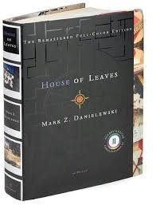

House of Leaves Review
A book by Mark Z Danielewski

★★★★★
House of Leaves is a incredibly complex yet captivating horror novel, its quite difficult to read, flashing back between three different perspectives at points and filled with enough scientific nonsense to fry a reader's brain but despite that, it has become one of my favourite books ever because of it. I highly recommend this to anyone who loves an unknown existential/eldritch horror read. Be prepared to go over it multiple times though.
Other Reviews!
Jake ★★★★★
So there's a definite cult around this book, and I am one of the many who drank the Kool-Aide and never looked back.
Paul ★★★☆☆
It's like one of those very psychedelic albums from the late sixties, where they do all those funny stereo effects, and all that phasing or whatever it was called - all great fun but you still had to have good songs.
Wil ★★★★★
House of Leaves isn't one of those tidy little things that holds your hand and wipes your bottom and tells you that you're special. It makes you work, and what you get out of it depends largely on how much work you're willing to do. House of Leaves is difficult at times, incredibly complex, occasionally pretentious, and it doesn't neatly wrap up some of the biggest questions it raises.